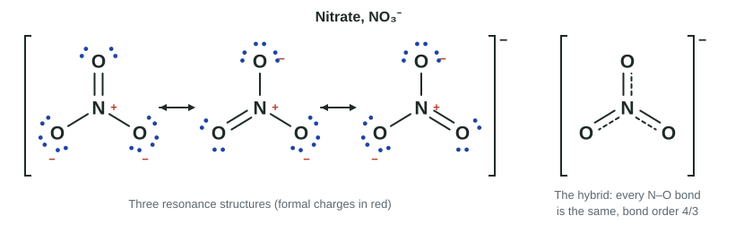

Resonance and Formal Charge
When several valid Lewis diagrams differ only in where electrons are placed, they are resonance structures, and the real species is a single hybrid with delocalized electrons.
Part 1 · Hook
Why this matters
Part 2 · Before you start
What this builds on
Part 3 · Prerequisite check
Quick check before you start
1. How many valence electrons does the Lewis diagram of the nitrate ion, NO₃⁻, show?
- 24
- 23
- 22
- 30
Show the answer
N 5 + 3 × O 6 = 23, plus 1 for the 1− charge = 24.
- Correct: 24:
- 23:
- 22:
- 30:
2. Compared with a single bond between the same two atoms, a double bond is
- shorter and stronger
- longer and stronger
- shorter and weaker
- the same length
Show the answer
More shared electrons attract both nuclei more strongly.
- Correct: shorter and stronger:
- longer and stronger:
- shorter and weaker:
- the same length:
Part 4 · See it
See it first

Part 5 · Step by step
How it works, step by step
- Several valid Lewis diagrams place the atoms the same way but the electrons differentlythey are resonance structures, linked by a double-headed arrow
- No single diagram matches the measured, equal bond lengthsthe real species is one resonance hybrid with delocalized electrons
- The bonding pairs are shared over several equivalent bondseach bond has a fractional bond order and an in-between length
- Diagrams that are not equivalent assign electrons differently to each atomformal charge (valence − lone-pair electrons − ½ bonding electrons) compares them
- Separating charge costs energy, and electronegative atoms hold extra electrons bestthe best diagram has formal charges nearest zero, with negative charge on the more electronegative atom
Part 6 · Key ideas
Key ideas
- Resonance structures have the same atom positions and differ only in where electrons are drawn.
- The real species is one resonance hybrid with delocalized electrons; it does not flip between diagrams.
- Bond order in a hybrid = bonding pairs ÷ number of bonds sharing them (nitrate 4/3, ozone 3/2). Equal, in-between lengths are the evidence.
- Formal charge = valence electrons − lone-pair electrons − ½ bonding electrons; the formal charges add up to the overall charge.
- Best diagram: formal charges closest to zero, and any negative one on the more electronegative atom.
Part 7 · Misconception
A common mistake
The wrong idea: Ozone switches back and forth between its two Lewis diagrams, so its bonds are sometimes single and sometimes double.
What actually happens: Ozone has one real structure, the hybrid, in which both O–O bonds are identical with bond order 1.5 at every moment. The two diagrams are partial pictures of that one structure.
Part 8 · Check yourself
Check yourself
Exam-style questions. Anything you miss goes into your review queue.
Model
Three diagrams for the cyanate ion
The cyanate ion, OCN⁻, has 16 valence electrons. A student draws three possible Lewis diagrams, all with the atoms in the order O, C, N. Formal charges are not shown. Electronegativity: O 3.4, N 3.0, C 2.6.
1. What is the formal charge on the N atom in Structure I? Give a sign with your answer (for example −1).
Type a number.
Show the answer
N has 5 valence electrons. In Structure I it has two lone pairs (4 electrons) and one double bond (4 bonding electrons, half is 2). 5 − 4 − 2 = −1.
- Answer: -1
2. What is the formal charge on the O atom in Structure III? Give a sign with your answer.
Type a number.
Show the answer
O: 6 valence electrons − 2 in its one lone pair − 3 (half of the 6 in the triple bond) = +1.
- Answer: 1
3. Which structure best represents the cyanate ion, and why?
- Structure I: it has two double bonds, and a symmetrical structure is the most stable
- Structure II: small formal charges, with the −1 on O, the most electronegative atom
- Structure III: it has a triple bond, which is the strongest kind of bond
- Structure I: N carries the negative charge, and N is the larger of the two outer atoms
Show the answer
Formal charges: I is O 0, C 0, N −1; II is O −1, C 0, N 0; III is O +1, C 0, N −2. I and II both have small formal charges, but II puts the −1 on O (3.4), the more electronegative atom, which holds extra electron density best.
- Structure I: it has two double bonds, and a symmetrical structure is the most stable: Symmetry is not a rule for choosing; Structure I puts the −1 on N, which is less electronegative than O.
- Correct: Structure II: small formal charges, with the −1 on O, the most electronegative atom: Right: smallest formal charges, negative on the most electronegative atom.
- Structure III: it has a triple bond, which is the strongest kind of bond: Structure III has the largest formal charges (+1 and −2), and puts a positive charge on O. A triple bond does not make up for that.
- Structure I: N carries the negative charge, and N is the larger of the two outer atoms: Size is not the test; electronegativity is. N is less electronegative than O, so the −1 belongs on O.
Data table
Measured bond lengths
Bond lengths measured in several molecules and ions. Where a species has more than one bond of the kind listed, all of them have the length shown.
| Species | Bond | Length (pm) |
|---|---|---|
| H₂O₂ (hydrogen peroxide) | O–O single | 148 |
| O₂ (oxygen) | O=O double | 121 |
| O₃ (ozone) | both O–O bonds | 128 |
| CH₃OH (methanol) | C–O single | 143 |
| H₂CO (formaldehyde) | C=O double | 121 |
| CO₃²⁻ (carbonate) | all three C–O bonds | 129 |
4. One Lewis diagram of ozone shows one O–O single bond and one O=O double bond. Which statement about the measured data is best?
- Both are 128 pm, between single (148) and double (121): ozone is a resonance hybrid
- One bond should measure 148 pm and the other 121 pm, so the data are in error
- Both bonds are double bonds, because 128 pm is closer to 121 pm than to 148 pm
- The bonds are equal because ozone flips between its two diagrams and the average is measured
Show the answer
A single diagram predicts two different bonds, but both measure 128 pm, between a single and a double bond. Ozone has two equivalent diagrams; the real molecule is their hybrid, with each O–O bond of bond order 1.5.
- Correct: Both are 128 pm, between single (148) and double (121): ozone is a resonance hybrid: Right: equal, intermediate lengths are the evidence for resonance.
- One bond should measure 148 pm and the other 121 pm, so the data are in error: Both bonds really are the same length; that is what the single-diagram picture fails to explain.
- Both bonds are double bonds, because 128 pm is closer to 121 pm than to 148 pm: With two double bonds, ozone's 18 electrons would put 10 around the central O, which period 2 atoms cannot hold; each bond is in between.
- The bonds are equal because ozone flips between its two diagrams and the average is measured: The molecule does not flip; it has one structure, the hybrid.
5. The carbonate ion has three resonance structures, each with one C=O and two C–O bonds. What is the bond order of each C–O bond in the hybrid? Give the answer to two decimal places.
Type a number.
Show the answer
Total bond pairs between C and the three O atoms: 2 + 1 + 1 = 4. Spread over three equal bonds: 4 ÷ 3 = 1.33.
- Answer: 1.33
6. Which expression gives the formal charge on an atom in a Lewis diagram?
- Number of bonds − number of lone pairs
- Valence electrons − the electrons drawn around the atom
- Valence electrons − lone-pair electrons − ½ (bonding electrons)
- Lone-pair electrons + ½ (bonding electrons) − valence electrons
Show the answer
Formal charge compares the electrons an atom brings (valence) with the electrons assigned to it in the diagram: all of its lone-pair electrons and half of each bond.
- Number of bonds − number of lone pairs: This ignores the atom's valence electrons, which every formal charge starts from.
- Valence electrons − the electrons drawn around the atom: That counts both electrons of every bond for the atom; a bond is shared, so the atom gets half.
- Correct: Valence electrons − lone-pair electrons − ½ (bonding electrons): Right: the formal charge formula.
- Lone-pair electrons + ½ (bonding electrons) − valence electrons: That is the formula with the sign reversed; it gives +1 where the true formal charge is −1.
Part 9 · Summary
Summary
Part 10 · Up next
What comes next
Part 11 · Connections